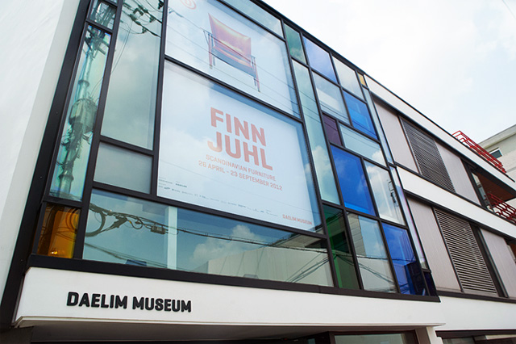

재단소개
대림문화재단은 1996년 대림산업이 국내에서 문화예술을 발전, 진흥시키고자 설립했습니다.
대림문화재단의 주요 설립목표 중 하나는 일반 대중에게 문화예술의 체험 기회를 확대하는 것입니다. 이에 따라, 대림미술관을 산하기관으로 설립하여 국내 문화예술의 활성화와 국제 문화교류에 이바지하고 있습니다. 대림미술관은 국내외 유명 작가들의 전시를 기획하는 한편, 예술 · 디자인관련 세미나, 교육 프로그램을 마련하고 있으며, 그밖에 공연, 파티 등 다양한 문화행사를 진행하고 있습니다.이 외에도 대림문화재단은 대림 이미지 총서 등을 출판하여 현대 예술·디자인의 중요한 전문서적을 발간하는 데 앞장서고 있습니다.
'In Everyday Life' 일상이 예술이 되는 미술관
대림미술관은 우리가 무심코 지나치는 일상 속 사물의 가치를 발견하고 그것에 매력을 더하여 더 많은 사람들이 그 일상의 예술을 즐길 수 있도록 노력하는 미술관입니다. 2002년 종로구 통의동에 개관한 대림미술관은 사진 전시로 출발해 패션, 일러스트레이션 디자인으로 전시 컨텐츠 영역을 확대해왔습니다. 폴 스미스 전, 디터 람스 전, 유르겐 텔러 전, 주명덕 전, 칼 라거펠트 전, 핀 율 전 등 대중들과 소통할 수 있는 전시를 발굴, 개최하여 예술에 대한 일반인들의 관심을 증대시키기 위해 많은 노력을 기울였습니다.